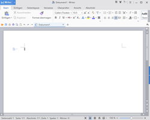
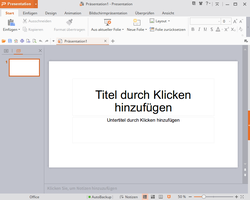
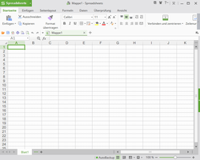

WPS Office
Dieser Artikel wurde für die folgenden Ubuntu-Versionen getestet:
Ubuntu 16.04 Xenial Xerus
Ubuntu 14.04 Trusty Tahr
Zum Verständnis dieses Artikels sind folgende Seiten hilfreich:
WPS Office for Linux  ist ein kostenloses, aber nicht quelloffenes Office-Paket. Es besteht aus den drei Komponenten Writer (Textverarbeitung), Presentation (Präsentation) und Spreadsheets (Tabellenkalkulation). Es wird von der Linux-Community des chinesischen Software-Herstellers Kingsoft angeboten, die seit 2014 existiert. Versionen für andere Betriebssysteme wie Windows, Mac OS X, iOS und Android sind ebenfalls verfügbar. Die erste Version der Büro-Software erschien bereits 1989 als "WPS 1.0".
ist ein kostenloses, aber nicht quelloffenes Office-Paket. Es besteht aus den drei Komponenten Writer (Textverarbeitung), Presentation (Präsentation) und Spreadsheets (Tabellenkalkulation). Es wird von der Linux-Community des chinesischen Software-Herstellers Kingsoft angeboten, die seit 2014 existiert. Versionen für andere Betriebssysteme wie Windows, Mac OS X, iOS und Android sind ebenfalls verfügbar. Die erste Version der Büro-Software erschien bereits 1989 als "WPS 1.0".
Funktionen:
vollständig kompatibel mit Microsoft Office
mehrsprachige Programmoberfläche (u.a. auch Deutsch), entweder mit Menüband oder einem klassischen Menü
deutsche Rechtschreibprüfung
direkter Export in eine PDF-Datei
Installation¶
Ein DEB-Paket für 32- oder 64-bit-Systeme kann direkt von der Website der Community heruntergeladen  werden (ca. 80 MiB). Dieses muss anschließend noch manuell installiert werden [1]. Die Installation erfolgt in den Ordner /opt/kingsoft/wps-office/.
werden (ca. 80 MiB). Dieses muss anschließend noch manuell installiert werden [1]. Die Installation erfolgt in den Ordner /opt/kingsoft/wps-office/.
Hinweis!
Fremdpakete können das System gefährden.
Konfiguration¶
Nach der Installation kann das Programm für deutsche Gegebenheiten angepasst werden.
Deutsche Lokalisierung¶
Direkt nach der Installation ist die Sprache der Programmoberfläche Englisch. Möchte man diese umstellen, ruft man rechts oben im Programmfenster den Menüpunkt "Tools -> Switch Language" auf. Nach dem Herunterladen der gewünschten Sprache muss das Programm geschlossen und neu gestartet werden.
Deutsche Rechtschreibprüfung¶
Um eine deutsche Rechtschreibprüfung zu ergänzen, wird die Datei de_DE.zip benötigt. Nach dem Entpacken [3] verschiebt man den Ordner de_DE nach ~/.kingsoft/office6/dicts/ im Homeverzeichnis. Abschließend wird innerhalb des Programms über "Überprüfen -> Rechtschreibprüfung -> Sprache festlegen" die neue Standardsprache festgelegt.
Der WPS Office Writer verfügt nicht über eine automatische Silbentrennung für deutsche Texte. Daher müssen Wörter manuell getrennt und ins Wörterbuch aufgenommen werden, da sie ansonsten als Fehler angezeigt werden.
Verwendung¶
Bei Ubuntu-Varianten mit einem Anwendungsmenü sind die einzelnen Komponenten via
"Büro -> WPS Writer"
"Büro -> WPS Presentation"
"Büro -> WPS Spreadsheets"
aufrufbar [2]. Alternativ kann man die Befehle wps, wpp und et verwenden. Beim ersten Programmstart müssen die Lizenzbedingungen (EULA) akzeptiert werden.
|  |
| WPS Writer |
|  |
| WPS Presentation |
|  |
| WPS Spreadsheets |
In der Voreinstellung wird beim Programmstart eine Seite mit verschiedenen englischen (Online-)Vorlagen angezeigt. Wer darauf verzichten kann, stellt über "Extras -> Optionen -> Allgemein und Speichern" auf "Starten mit -> neues Dokument" um. Nun wird im jeweiligen Programm ein leeres Dokument/Tabelle/Präsentation angezeigt.
Geöffnet und gespeichert werden Dokumente sowohl in den Formaten von MS Office 2007 (oder neuer) als auch von MS Office 2003. Daneben steht ein eigenes WPS-Format zur Verfügung. Mit LibreOffice erstellte ODF-Dokumente kann WPS Office nicht direkt öffnen. Umgekehrt kann LibreOffice prinzipiell Dokument-Formate von MS Office und WPS Office ohne Umwege öffnen (wenn auch teilweise mit Einschränkungen).
Programmoberfläche anpassen¶
Die Programmoberfläche kann mit einem Linksklick  auf das Symbol "UI wechseln" (sieht aus wie ein kleines T-Shirt) oben rechts angepasst werden. Zur Auswahl stehen 5 Varianten, die den verschiedenen MS-Office-Jahrgängen ähneln. Auf Wunsch können hier auch die klassischen Menüs von Office 2003 eingestellt werden.
auf das Symbol "UI wechseln" (sieht aus wie ein kleines T-Shirt) oben rechts angepasst werden. Zur Auswahl stehen 5 Varianten, die den verschiedenen MS-Office-Jahrgängen ähneln. Auf Wunsch können hier auch die klassischen Menüs von Office 2003 eingestellt werden.
Mit Tabs arbeiten¶
WPS Office beherrscht Reiter oder Tabs. So kann direkt zwischen Dokument-Fenstern gewechselt werden. Diese Tabs werden nur unter der Ribbon-Oberfläche angezeigt.
Zahlenformate¶
Aufgrund der Ausrichtung auf den englischen Sprachraum gibt es Probleme beim Einsatz von Feldbefehlen und Platzhaltern. Diese Problematik gilt prinzipiell für alle Programmteile. So kann beispielsweise das deutsche Datumsformat "09.05.2016" (TT.MM.JJJJ) im Writer nicht ausgewählt bzw. automatisch aktualisiert werden. Diese Funktion arbeitet nur mit der internationalen Formatierung "2016-05-09" (JJJJ-MM-TT).
In der Tabellenkalkulation Spreadsheets sind insbesondere die Zahlenformate betroffen (u.a. kein Währungssymbol für €). Teilweise kann man benötigte Zahlenformate unter "Benutzerdefiniert" manuell nachrüsten.
Problembehebung¶
Fehlermeldung beim Programmstart¶
Beim Programmstart erscheint eine englische Fehlermeldung, die sinngemäß auf ein Problem mit einem Symbolzeichensatz hinweist. Diese Fehlermeldung ist nur für die chinesische Lokalisierung relevant und kann einfach geschlossen werden. Alternativ kann man der Anleitung WPS Office Linux: Fehlerbehebung «some formula symbols missing»  folgen.
folgen.
Abbruch nach Programmstart¶
Wenn das Programm sofort nach dem Start abbricht, ist vermutlich ein Speicherzugriffsfehler aufgetreten. Man kann dann versuchen, das Programm mit dem Schalter -style gtk zu starten (Bsp.: wpp -style gtk) WPS Office on Neon .
Zeichensatz¶
Falls Webseiten mit WPS Office erstellt werden, sollte der Zeichensatz bzw. die Webseitencodierung über "Extras -> Optionen -> Allgemein und Speichern" auf UTF-8 eingestellt werden.
Links¶
Wikipedia:
FreeOffice - alternatives Office-Paket
WPS Office im Test
- freiesMagazin, 11/2015Kingsoft Office bzw. WPS Office als natives Linux-Office mit Ribbon-Look
- Blogbeitrag, 01/2013
- Erstellt mit Inyoka
-
 2004 – 2017 ubuntuusers.de • Einige Rechte vorbehalten
2004 – 2017 ubuntuusers.de • Einige Rechte vorbehalten
Lizenz • Kontakt • Datenschutz • Impressum • Serverstatus -
Serverhousing gespendet von